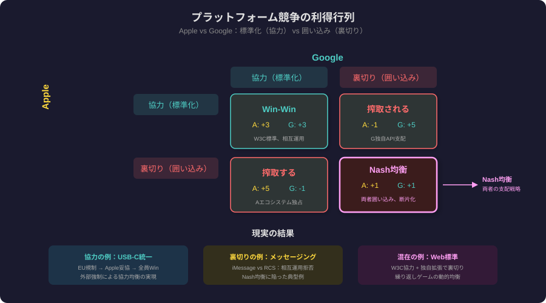
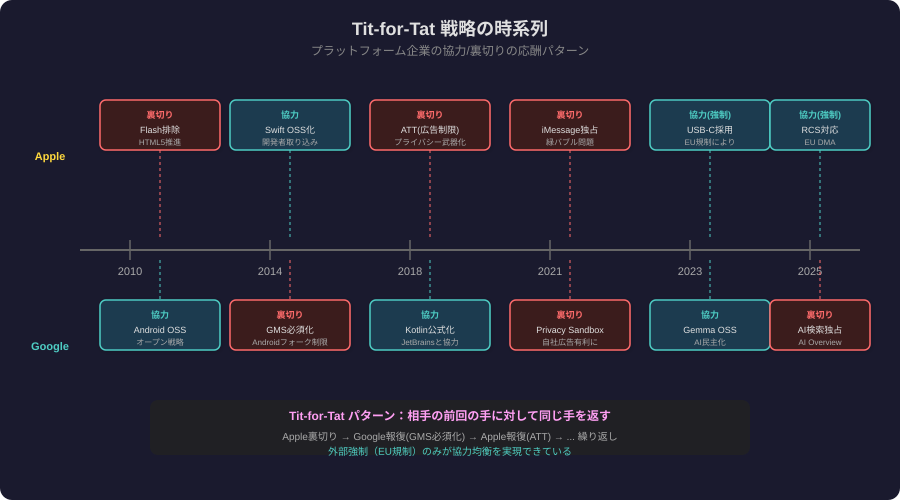
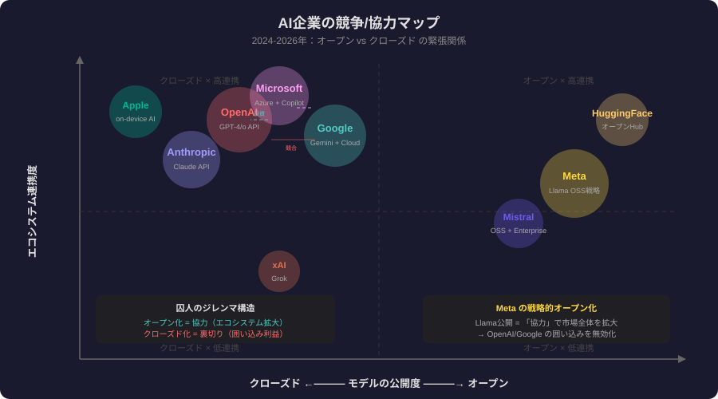

6章でゲーム理論をプラットフォーム競争に適用
Tit-for-Tat・規制・OSSまで後半5章を網羅
個人合理性が集合的最悪解を生む——プラットフォーム競争の本質
2社がともに裏切るのが「均衡」——なぜ協力が難しいかが分かる
誰も一方的に逸脱できない状態が均衡——プラットフォーム膠着の説明
囲い込みがナッシュ均衡—自発的オープン化は起きない

繰り返しが互恵的協力を可能にした——報復と信頼の15年史
協力から始め、裏切りには即報復——シンプルさが最強の理由
善良・報復・寛容・明確の4特性が協力を最大化する

標準化機関は囚人のジレンマを解く外部強制力として機能する
第三者制度設計が協力を強制—W3CがHTMLを統一した
Chrome65%支配で協力と独占が逆転—新たなジレンマへ

OpenAI包囲網をOSSで崩す—MetaのR&D費用社会化戦略
ゲームのルール自体を変えるメタ戦略—市場をオープンにシフト
EU DMAがAppleの裏切り戦略を強制的に協力へ転換させた
罰金でペナルティを上げ裏切りを不採算に—メカニズムデザイン
OSSの無賃乗車が蔓延—メンテナ疲弊の根本原因
GPLが裏切りを法的に封鎖—ライセンスが均衡を変える
将来の重みと観測可能性が協力均衡の2大条件
報復可能・少数プレイヤー・共通利益で協力が安定する
安全投資は競争で不利——だから自発的解決は不可能で規制が必要
安全性軽視が加速—AIアームレースが裏切り均衡に向かう
ルール設計で囚人ゲームを協力ゲームに変える——政策立案の本質
規制主導・AIアームレース・オープン化の3シナリオが並走
単一均衡はない—領域ごとに協力と競争が混在する未来
ゲーム理論は競争の必然を予測する——感情でなく数学で判断せよ
Tit-for-Tat＋制度設計＋国際機関の3層対策が必要
Matrix table
Grid cells
Event markers
Timeline